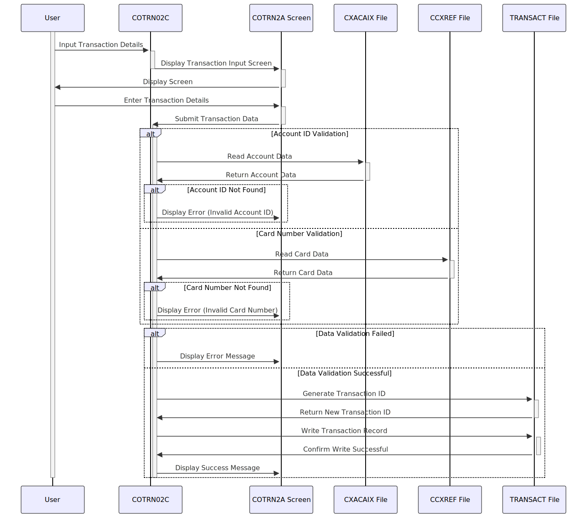

Gerado em: 1º de outubro de 2024
Título do Documento: Especificação de Adição de Transação CardDemo
Descrição Resumida:
Este documento descreve as especificações para a funcionalidade “Adicionar Transação” no aplicativo CardDemo. Esta funcionalidade permite que usuários autorizados insiram manualmente detalhes de novas transações de cartão de crédito no sistema.
Histórias do Usuário:
Como usuário do sistema, quero poder adicionar novas transações ao sistema para que eu possa rastrear todas as atividades do cartão de crédito.
Épico Relacionado: 4 - Processamento de Transações
Requisitos Técnicos:
- Entrada e Validação de Dados:
- O sistema deve fornecer uma tela ou interface para os usuários inserirem os detalhes da transação.
- O sistema deve validar as entradas do usuário quanto ao tipo de dados, formato e campos obrigatórios.
- ID da Conta: Numérico, validado em relação ao arquivo
CXACAIX.
- Número do Cartão: Numérico, validado em relação ao arquivo
CCXREF.
- Tipo de Transação: Código numérico.
- Categoria: Código numérico.
- Fonte: Texto.
- Descrição: Texto.
- Valor: Numérico, formato:
-99999999.99.
- Data de Origem: Data, formato:
YYYY-MM-DD, validada usando a função CSUTLDTC.
- Data de Processamento: Data, formato:
YYYY-MM-DD, validada usando a função CSUTLDTC.
- ID do Comerciante: Numérico.
- Nome do Comerciante: Texto.
- Cidade do Comerciante: Texto.
- CEP do Comerciante: Texto.
- Geração de ID de Transação:
- O sistema deve gerar um ID de transação exclusivo para cada nova transação.
- O ID da transação deve ser sequencial, determinado buscando o último ID de transação do arquivo
TRANSACT e incrementando-o em um.
- Registro de Transação:
- Após a validação bem-sucedida, o sistema deve gravar o novo registro de transação no arquivo
TRANSACT.
- Tratamento de Erros:
- O sistema deve exibir mensagens de erro apropriadas ao usuário em caso de entradas inválidas ou erros do sistema.
- Funcionalidade Copiar Última Transação:
- O sistema deve fornecer uma opção para copiar dados da última transação inserida para simplificar a entrada de dados para transações semelhantes.
- Mensagem de Confirmação:
- Após a adição bem-sucedida da transação, o sistema deve exibir uma mensagem de confirmação ao usuário, incluindo o ID da transação gerado.
Modelos Relacionados:
TRAN-RECORD:
TRAN-ID Numeric: Identificador exclusivo para uma transação.TRAN-TYPE-CD Code: Representa o tipo de transação.TRAN-CAT-CD Code: Categoriza a transação.TRAN-SOURCE Text: Indica a origem da transação.TRAN-DESC Text: Fornece uma descrição da transação.TRAN-AMT Numeric: Armazena o valor monetário da transação.TRAN-CARD-NUM Numeric: Número do cartão de crédito associado à transação.TRAN-MERCHANT-ID Numeric: Identifica o comerciante envolvido.TRAN-MERCHANT-NAME Text: Armazena o nome do comerciante.TRAN-MERCHANT-CITY Text: Cidade do comerciante.TRAN-MERCHANT-ZIP Text: CEP do comerciante.TRAN-ORIG-TS Timestamp: Timestamp de início da transação.TRAN-PROC-TS Timestamp: Timestamp de processamento da transação.
Configurações:
- Caminhos de Arquivo:
- Arquivo
TRANSACT: Valor da configuração do sistema
- Arquivo
CXACAIX: Valor da configuração do sistema
- Arquivo
CCXREF: Valor da configuração do sistema
- Formato de Data:
YYYY-MM-DD
- Formato de Valor:
-99999999.99
Melhorias de Código:
- Tratamento de Erros: Implementar um mecanismo centralizado de tratamento de erros para melhorar a manutenção e legibilidade do código.
- Log: Adicionar log detalhado para fins de auditoria e solução de problemas.
- Modularidade: Dividir o código em módulos menores e reutilizáveis para melhor organização e manutenção.
- Abstração de Dados: Considerar o uso de estruturas de dados ou classes para encapsular dados de transação e operações relacionadas.
- Comentários de Código: Adicionar comentários claros e concisos para melhorar a legibilidade e o entendimento do código.
Melhorias de Segurança:
- Sanitização de Entrada: Implementar a sanitização de entrada para evitar vulnerabilidades de injeção.
- Autorização: Impor o controle de acesso baseado em função para restringir a adição de transações apenas a usuários autorizados.
- Criptografia de Dados: Criptografar dados confidenciais, como números de cartão e valores de transação, tanto em trânsito quanto em repouso.
Diagrama Conceitual:

–Made by “Smart Engineering” (by Compass.UOL)–